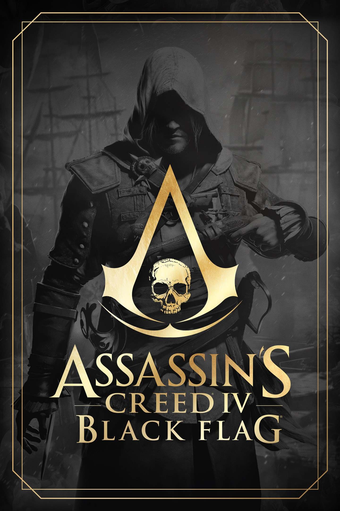

Assassin’s Creed IV: Black Flag é um jogo de ação e aventura desenvolvido pela Ubisoft Montreal e lançado em 2013. O jogo se passa no Caribe e entre os anos de 1715 a 1722. O título faz parte da famosa franquia Assassin’s Creed e se destaca por combinar combates, furtividade, exploração e batalhas navais em um grande mundo aberto. A história se passa principalmente no Caribe, durante a Era de Ouro da Pirataria.
O jogador assume o papel de Edward Kenway, um jovem e ambicioso pirata que busca riqueza e reconhecimento. Durante sua jornada, Edward acaba se envolvendo no antigo conflito entre Assassinos e Templários, descobrindo que sua vida como pirata está ligada a uma disputa muito maior. Ao longo da aventura, ele encontra diversos personagens, incluindo piratas inspirados em figuras históricas.
Um dos grandes destaques do jogo é a liberdade de exploração. Edward pode navegar pelo Caribe com seu navio, o Jackdaw, enfrentar embarcações inimigas, procurar tesouros, explorar ilhas, caçar animais e realizar diferentes missões. Com sua mistura de pirataria, aventura, exploração e ação, Assassin’s Creed IV: Black Flag se tornou um dos jogos mais marcantes da franquia.

Em Assassin’s Creed IV: Black Flag, o jogador assume o controle de Edward Kenway, um pirata habilidoso e ambicioso que busca riqueza e fama. Durante sua jornada, Edward encontra membros da Ordem dos Assassinos e dos Templários, entrando em um conflito que vai muito além da vida de pirata.
Um dos grandes destaques do jogo é a exploração marítima. Edward utiliza seu navio, o Jackdaw, para navegar pelo Caribe, enfrentar navios inimigos, procurar tesouros e explorar ilhas. O navio também pode ser melhorado com novas armas, equipamentos e melhorias de resistência.
Além das batalhas navais, o jogo apresenta combates terrestres, missões de furtividade, caça, exploração subaquática e diversas atividades secundárias. O mundo aberto oferece liberdade para o jogador decidir como explorar o ambiente e avançar em sua aventura.
Com sua mistura de pirataria, exploração, história e ação, Assassin’s Creed IV: Black Flag se tornou um dos títulos mais conhecidos da franquia, destacando-se principalmente pela ambientação no Caribe e pelas batalhas navais.
Aqui está o trailer do jogo